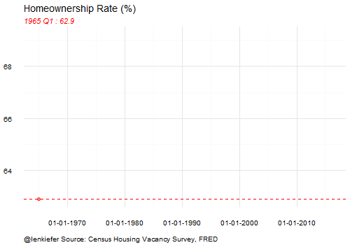
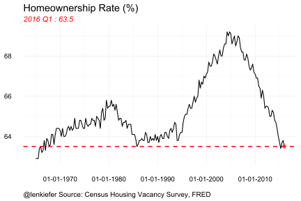
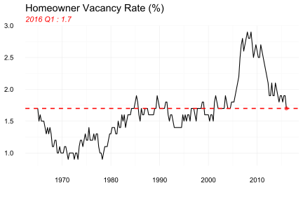
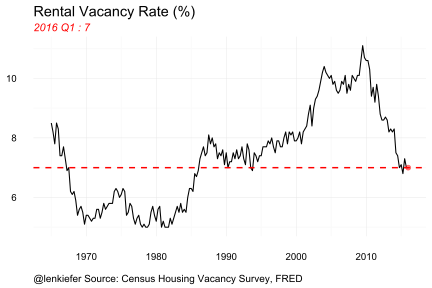
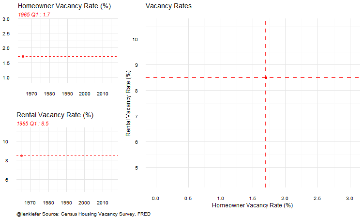
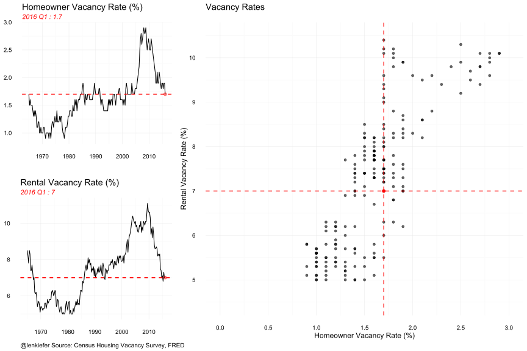
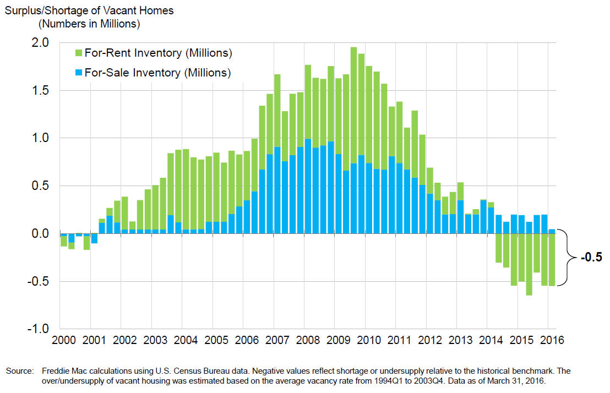
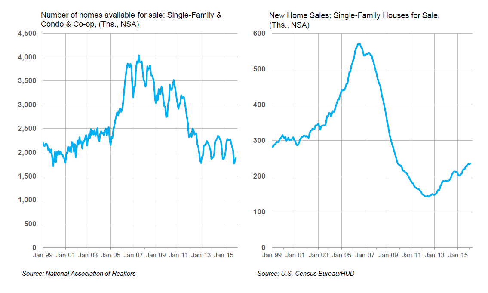

EARLIER THIS WEEK the Census Bureau released the latest Housing Vacancy Survey (HVS) data for the first quarter of 2016.
Much attention went to the homeownership rate estimates, which showed a decline in homeownership rates near a 48-year low. The gif below shows the history of the homeownership rate as estimated by the HVS.

And here’s a still image of the same data:

Vacancy rates
In addition to the homeownership rate, the HVS data contained estimates of both the homeowner and rental vacancy rates. The graphs below show the history of each.


The animated gif below shows the joint evolution of the two series, along with a scatterplot showing the correlation between the two series.

And a still of the last frame:

What we can see from these data is the incredible rise and fall of vacancy rates during the housing bust and subsequent recovery. Compared to history, rental vacancy rates are bit below their historical average, while homeowner vacancy rates are bit above their historic average.
Surplus to shortage
One way to look at these data is to consider in absolute numbers how many excess vacant housing units we might have at any point in time. If we concede that a certain level of vacant housing stock is “normal”, then we can compare that to the current vacant housing stock. That is in fact, what we do the following figure:

This graph was constructed by first taking the average vacancy rate for for-sale and for-rent housing from 1994Q1-2003Q4 and then comparing the current vacancy rate to those levels. If the current vacancy rate is above (below) the historic average then we consider the vacant housing supply to be in surplus (shortage).
As of the first quarter 2016, the vacant housing supply is in shortage by this method by about 500,000 units. That is, there are about 500,000 fewer vacant housing units relative to what history tells us is normal. Note that the green bar (capturing rentals) is negative while the blue bar (capturing owned units) is positive. This means that in aggregate, the total vacant housing stock is 500,000 below “normal”, with rentals more than 500,000 short, while for-sale properties are about 50,000 above normal.
What does it all mean?
A lack of vacant housing stock creates problems throughout the housing market. A shortage of vacant units decreases mobility. A prospective renter considering a move has a hard time finding an apartment or single-family rental property they can move into when they’d like. At the same time, a relatively tight for-sale vacant housing supply means that current homeowners who might like to list their current property and trade up or down have a hard time finding a place they can quickly move to if they sold their home.
With for-sale markets heating up this issue will likely loom larger in future. In many markets, home are selling quickly. A homeowner looking to trade up or down might easily find a buyer for their current home, but have a hard time finding a place to buy.

As the chart below shows, existing homes for sale have been flat over the past three years (with typical seasonal ups and downs) while new homes for sale have been trending higher, but from a low base. With low mortgage rates and a labor market posting solid jobs gains month after month, housing demand is likely to remain strong throughout the spring and summer.
We’ve very quickly gone from a world of excess supply and surplus vacant homes, to a world of tight housing inventory and a shortage of vacant homes. Given recent trends, shortages are likely to increase before abating.